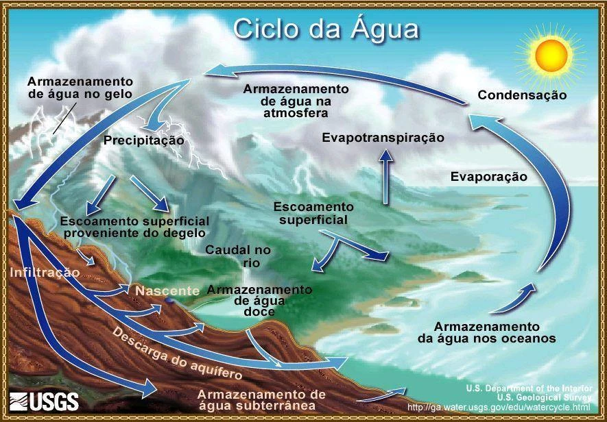

Topicos: Água.
Água, fonte de vida
A água é a fonte de vida de todos os seres vivos. Por isso, nas expedições em outros planetas, a água é um dos primeiros recursos procurados, pois pode ser um indicador da existência de vida.
A Importância da Água
A importância da água do planeta é de tamanha proporção, posto que é um elemento essencial para a sobrevivência de animais e vegetais na Terra, além de fazer parte de inúmeras atividades dos seres humanos.
A falta de água é uma ameaça, uma vez que a água é fonte de vida. Estamos tão habituados à presença da água que só damos conta da sua importância quando ela nos faz falta, mas isso precisa mudar.
Preservar os recursos hídricos é preservar a nossa existência. Para se ter uma ideia, a maior parte das células do nosso corpo possui água, por isso ingerir água é uma necessidade do corpo humano.
A importância da água para o planeta
A água está relacionada não só com o surgimento de vida na Terra, mas também com a sua evolução. Quando o planeta é visto do espaço, o azul se sobressai pela enorme quantidade de água no planeta, já que cerca de 70% da superfície é coberta por água.
Entretanto, a maior parte da água no planeta é salgada. Há apenas 2,7% de água doce e, desse percentual, apenas 0,1% corresponde à água doce disponível para utilização.
Ciclo da Água.
O ciclo hidrológico, ou ciclo da água, é o movimento contínuo da água presente nos oceanos, continentes (superfície, solo e rocha) e na atmosfera. Esse movimento é alimentado pela força da gravidade e pela energia do Sol, que provocam a evaporação das águas dos oceanos e dos continentes.
Na atmosfera, forma as nuvens que, quando carregadas, provocam precipitações, na forma de chuva, granizo, orvalho e neve.
Água no Brasil
O Brasil é um país abundante em recursos hídricos, representando cerca de 12% do total mundial. Contudo, sua distribuição não é uniforme no território.
Há um contraste visível entre a distribuição de água no Brasil e a distribuição populacional. A Região Norte, que detém o maior volume de água doce do país, é a região com menor densidade demográfica, ou seja, é uma das regiões menos povoadas, contando com apenas 7% da população.
Já a Região Sudeste, a mais povoada do país com cerca de 42,63% da população, conta com apenas 6% da disponibilidade de recursos hídricos.